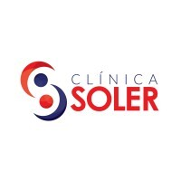
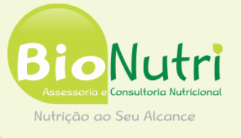
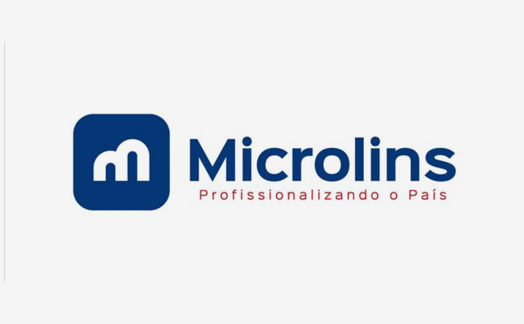
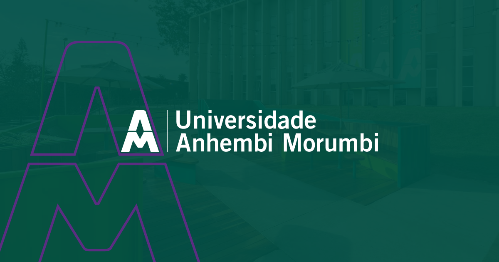
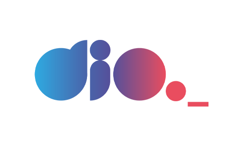

Micael
23 anos, solteiro, Brasileiro
Estudante de Ciência da Computação, Inglês, Espanhol e atuante em Suporte Técnico e Propaganda. Estou em busca de oportunidades no mercado tecnologico que me permitam aplicar meus conhecimentos na área de tecnologia, atualmente estou atuando de forma autônoma realizando montagem e manutenção de computadores
Experiências

Estagiário de T.I. • Clínica Soler
Fiz parte da equipe de T.I., onde realizava a Criação e manipulação diária de planilhas com o resumo dos dados de um determinado período da empresa para comparação de desempenho, Automação de mensagens via Whatsapp para atendimentos e ligações, configuração, Suporte Técnico e manutenção preventiva de computadores e notebooks, reparo de impressoras e da infraestrutura da rede, Responsável pelo estoque de equipamentos eletrônicos, hardwares de computadores e periféricos Reparo no Servidor configurado em Linux e participação da sua configuração
atuação de 01/2023 até 01/2024
Ver Empresa →
Estagiário • BioNutriKids
Fui responsável pela área de Marketing Digital e Web Designer, atuando na gestão de tráfego por meio do Meta Business Manager, incluindo criação de pixel, desenvolvimento de campanhas e estratégias, além da gestão de DNS e configuração de host. Ao longo do tempo na empresa, também passei a desempenhar outras atividades, como criação e edição de sites de produtos utilizando WordPress e Elementor, atendimento e comunicação com clientes por meio do Zoom, participação em palestras com foco em vendas de produtos e desenvolvimento de automações de chats utilizando o ManyChat.
atuação de 08/2024 até 04/2025
Ver Empresa →Conhecimentos

Microlins • Programação
Bolsista
842_Lógica de Programação, 843_Programação C# com Visual Studio - Essencial, 850_ Programação C# com Visual Studio - Intermediário, 857_ Programação C# com Visual Studio - Avançado II, 858_Programação C# com Visual Studio - Avançado I, 896_Banco de Dados com SQL
inicio em 08/2022 até 07/2023
Ver Portal →Microlins • Informática Essencial
Introdução à Informática, Microsoft Excel 2016, Microsoft Internet Explorer - Outlook 2016, Microsoft PowerPoint 2016, Microsoft Windows 10, Microsoft Word 2016
inicio em 01/2022 até 09/2022
Ver Portal →Microlins • Hardware
Redes - Cabeamento e Infraestrutura, Redes - Lógica e Estruturação, Redes - Tecnologias Wireless, Hardware, Montagem e Manutenção de Computadores
inicio em 05/2021 até 02/2023
Ver Portal →
UAM Anhembi Morumbi • Ciência da Computação
Bolsista ENEM
Período noturno
Média de 8,22
8° semestre, conclusão do curso previsto após a entrega das horas do estágio obrigatório
inicio em 01/2022
Ver Portal →
Dio • Bootcamp Bradesco GenAi & Dados
Engenharia de Prompts, Excel com SQL, Power BI, Python, Lógica e Pensamento Computacional, Algoritmos e Aprendizado de Máquina, IAs Generativas, Criação de Assistente Virtual com IA Generativa